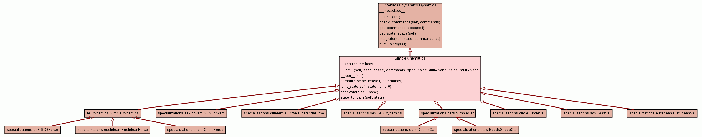

Class SimpleKinematics
source code

A subclass for dynamics which have only a kinematic component.
Here pose_space is assumed to be a subgroup of SE3,
and the state is (pose, vel) where vel is a subalgebra of se3.
The model includes stochastic noise, containing two terms:
1) drift Gaussian noise - of fixed covariance.
2) proportional to the velocities.
More in detail, let algebra2vector(.) be the isomorphism from
the algebra to R^n.
Suppose that v0 are the "intentional" velocities (element of the
Lie algebra). Then let:
w0 = algebra2vector(v0)
w = w0 + Normal(M0 + M1*|w|)
v = vector2algebra(w)
For simplicity, both M0 and M1 are assumed to be diagonal matrices.
They are called, respectively, noise_drift and noise_mult below.
configuration = (pose, vel)
|
|
__init__(self,
pose_space,
commands_spec,
noise_drift=None,
noise_mult=None)
x.__init__(...) initializes x; see help(type(x)) for signature |
source code
|
|
|
|
|
|
|
|
|
|
compute_velocities(self,
commands)
Subclasses should implement this and return an element
of the algebra. |
source code
|
|
|
tuple(SE3,se3)
|
|
|
|
|
|
|
|
|
Inherited from interfaces.dynamics.Dynamics:
__str__,
check_commands,
get_commands_spec,
get_state_space,
integrate,
num_joints
Inherited from object:
__delattr__,
__format__,
__getattribute__,
__hash__,
__new__,
__reduce__,
__reduce_ex__,
__setattr__,
__sizeof__,
__subclasshook__
|
|
|
__abstractmethods__ = frozenset(['compute_velocities']) |
|
|
|
Inherited from object:
__class__
|
__init__(self,
pose_space,
commands_spec,
noise_drift=None,
noise_mult=None)
(Constructor)
| source code
|
x.__init__(...) initializes x; see help(type(x)) for signature
- Parameters:
noise_mult (None|seq[K](>=0))pose_space (DifferentiableManifold)noise_drift (None|seq[K](>=0)) - Overrides:
object.__init__
|
repr(x)
- Overrides:
object.__repr__
- (inherited documentation)
|